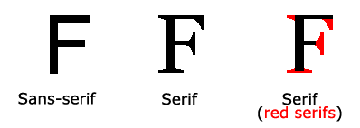

Serif 와 Sans-serif 글꼴의 차이

예전의 해상도가 낮은 컴퓨터 화면에서는 Sans-serif 글꼴은 Serif 글꼴보다 보기좋은 것으로 간주되어 많이 사용되었으나 오늘 날의 컴퓨터 화면은 해상도가 매우 뛰어나므로 Serif 글꼴의 우아한 모양을 사용해도 큰 무리가 없다.
그러나 사용자의 컴퓨터에 지정한 글꼴이 있는 경우에는 문제가 되질 않지만 모바일인 경우에는 글꼴이 매우 제한적이므로 가급적 단순한 글꼴을 사용하는 것이 좋다.
| 일반 글꼴 | 글꼴 이름 |
|---|---|
| Serif |
Times New Roman Georgia Garamond |
| Sans-serif |
Arial Verdana Helvetica |
| Monospace |
Courier New Lucida Console Monaco |
| Cursive |
Brush Script MT Lucida Handwriting |
| Fantasy |
Copperplate Papyrus |
요소의 글꼴은 font-family 속성으로 설정한다.
font-family 속성을 지정해도 웹 브라우저와 운영 체제가 지정한 글꼴을 가지고 있어야 한다. 이러한 경우를 위하여 원하는 글꼴이 없으면 대체할 여러 글꼴 이름을 나열하여 일반 글꼴로 끝나도록 설정한다. 이는 다른 글꼴을 사용할 수 없는 경우 브라우저가 일반 글꼴에서 유사한 글꼴을 선택할 수 있도록 한다. 글꼴 이름은 쉼표로 구분하여 나열하고, 글꼴 이름이 두 단어 이상인 경우에는 따옴표로 묶어야 한다. 일반 글꼴(Generic font )은 지시어이므로 따옴표로 묶어서는 않된다. 브라우저는 첫 번째 글꼴이 작동하지 않으면 다음 글꼴을 시도하고 아니면 또 다음 글꼴을 시도한다.
<style >p.serif {font-family :'Times New Roman', Times, serif ; }p.sans_serif {font-family :Arial, Helvetica, sans-serif ; }p.monospace {font-family :'Courier New', Courier, monospace ; } </style >
<p class ="serif ">This is a paragraph, shown in the Times New Roman font.</p > <p class ="sans_serif ">This is a paragraph, shown in the Arial font.</p > <p class ="monospace ">This is a paragraph, shown in the Courier New font.</p >
This is a paragraph, shown in the Times New Roman font.
This is a paragraph, shown in the Arial font.
This is a paragraph, shown in the Courier New font.
웹 문서를 게시하기 전에 항상 다른 브라우저와 장치에서 글꼴이 어떻게 나타나는지 확인하고 대체 글꼴을 사용하는 것이 안전하다.
다음의 글꼴은 대부분 영문자의 경우이다. 한글의 경우에는 앞에 열거한 일반글꼴이 안전하다.
다음은 매우 기본적인 한글 글꼴이다. 이 글꼴은 윈도우에서만 사용 가능하다.
본 페이지의 글꼴은
font-style 속성은 대부분 기울임 꼴을 지정하는 데 사용한다.
<style >.normal {font-style :normal ; }.italic {font-style :italic ; }.oblique {font-style :oblique ; } </style >
This is normal This is italic This is oblique
<style >.normal {font-weight :normal ; }.lighter {font-weight :lighter ; }.thick {font-weight :thick ; }.thicker {font-weight :900 ; } </style >
Normal Lighter Thick 900
font-variant 는 영문자를 작은 대문자로 표시할지 여부를 지정한다.
모든 소문자가 대문자로 변환되며 원래의 대문자보다 작은 크기로 나타낸다.
<style >.normal {font-variant :normal ; }.smallcaps {font-variant :small-caps ; } </style >
Hello JavaSctipt Hello JavaSctipt
font-size 속성은 글자의 크기를 설정한다.
글자 크기를 지정하는 것은 중요하지만 단락을 제목처럼 보이게 하거나 제목을 단락처럼 보이도록 글자 크기를 지정하면 안된다.
제목에는 <
글자 크기는 절대값 또는 상대값으로 설정한다.
참고 : 글꼴 크기를 지정하지 않으면 단락과 같은 일반 글자의 기본 크기는 16px (16px = 1em)이다.
픽셀( Pixel )이란 화면의 화소 단위를 말하므로 글자 크기를 픽셀( px )로 설정하면 글자 크기를 확실하게 설정할 수 있다.
<style >h1.size40 {font-size :40px ; }h1.size30 {font-size :30px ; }p.size15 {font-size :15px ; } </style >
문단 <p style="font-size: 15px;">
참고 : 픽셀을 사용하는 경우에도 브라우저의 확대(
사용자가 브라우저 메뉴에서 글자 크기를 조정할 수 있도록 많은 개발자가 픽셀 대신 em을 사용한다.
1em 은 현재 글꼴 크기와 같다. 브라우저의 기본 텍스트 크기는 16px 이다. 따라서 1em 의 기본 크기는 16px 이다.
크기는 다음 공식을 사용하여 계산할 수 있다.
pixels / 16= em
<style >h1 {font-size :2.5em ;/* 40px / 16 = 2.5em */ } </style >
글자 크기를 em 으로 설정하면 웹 브라우저의 설정에서 사용자가 글자 크기를 조정할 수 있다. 그러나 이전 버전의 Internet Explorer에서는 제대로 작동되지 않는다.
모든 브라우저에서 작동하도록 하려면 <
<style >body {font-size :100% ; } </style >
글자 크기를 "화면 너비(Viewport Width)"를 의미하는 vw 단위로 설정하면 글자 크기가 브라우저 창의 크기에 따라 결정된다.
<h1 style ="font-size: 7vw; ">Hellow JavaSctipt</h1 >
웹 브라우저 창의 크기를 조정하면 글자 크기가 바뀐다.
Hellow JavaSctipt
화면(Viewport)은 브라우저 창의 크기이다. 1vw = 화면 너비의 1 %. 화면 너비가 50cm이면 1vw는 0.5cm가 된다.
HTML에서 표준 글꼴을 사용하지 않고 Google Fonts를 사용할 수 있다.
Google Fonts는 무료로 사용할 수 있으며 1000 개 이상의 글꼴을 선택할 수 있다.
<head > <link rel ="stylesheet "href ="https://fonts.googleapis.com/css?family=Sofia "> <style >body {font-family :"Sofia", sans-serif ; } </style > <head >
Sofia Font
0123456789
글꼴 쌍을 만들기 위한 기본 규칙
1. 보완하는 글꼴
서로를 보완하는 글꼴 쌍을 찾는 것이 항상 안전하다.
훌륭한 글꼴 조합은 너무 비슷하거나 너무 다르지 않으면서 조화를 이루어야 한다.
2. 글꼴 수퍼 패밀리 사용
글꼴 수퍼 패밀리는 함께 잘 작동하도록 설계된 글꼴 세트이다. 따라서 동일한 수퍼 패밀리 내에서 다른 글꼴을 사용하는 것이 안전하다.
예를 들어, Lucida 수퍼 패밀리에는 Lucida Sans, Lucida Serif, Lucida Typewriter Sans, Lucida Typewriter Serif 및 Lucida Math 글꼴이 포함되어 있다.
3. 대비가 최상
너무 유사한 두 글꼴은 종종 충돌한다. 그러나 올바른 방법으로 수행된 대비는 각 글꼴에서 최상의 결과를 가져온다.
예 : serif와 sans serif를 결합하는 것은 잘 알려진 조합이다.
강력한 수퍼 패밀리에는 동일한 글꼴의 serif 및 sans-serif 변형이 모두 포함된다 (예 : Lucida 및 Lucida Sans).
4. 단 하나의 대표 글꼴 선택
하나의 글꼴을 대표 글꼴로 하면 페이지의 글꼴 계층이 설정된다. 이것은 크기, 두께 및 색상을 변경하여 얻을 수 있다.
<style >body {background-color :black ;font-family :Verdana, sans-serif ;font-size :16px ;color :gray ; }h1 {font-family :Georgia, serif ;font-size :60px ;color :white ; } </style >
font 속성은 다음 속성에 대한 줄임 속성이다.
참고 : font-size 와 font-family 는 필수. 다른 값 중 하나가 누락된 경우 해당 기본값이 사용된다
<style >p.arial {font :20px Arial, sans-serif ; }p.georgia {font :italic small-caps bold 12px/30px Georgia, serif; ; } </style >